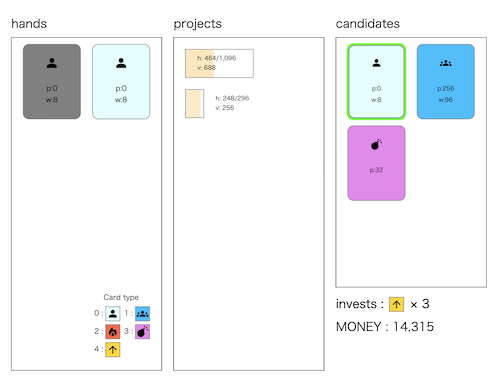

RECRUIT 日本橋ハーフマラソン 2024冬(AHC029)¶

問題概要¶
- 複数のプロジェクトに対し、毎ターンごとに手札から方針カードを使って進めるゲームをプレイしている
- 手札から1枚選び消費し、その手札に従ってプロジェクトを進め、新しいカードを1枚補充する、を1ターンとして進める
- カードは、通常労働カード、全力労働カード、キャンセルカード、業務転換カード、増資カードの5種類
- プロジェクトは完了までの残務量と価値が定められている
- 開始時は所持金は0で、プロジェクトを完了するたびにプロジェクトの価値分所持金が増える
- ターン終了時の所持金を最大化せよ
時間¶
- 105 時間
個人的メモ¶
アプローチ¶
- できるだけ増資カードの使用回数Lを増やし、かつ、十分高い所持金で終わるのを目指したい
- 増資回数だけでなく、終わるタイミングも重要
- 1000ターンで実行制限時間が2秒しかなく、1ターンあたり0.002秒ぐらいしか使えないため、時間がかかるような処理も難しい
- 今回は、探索ベースの手法が上位では多かった模様
ルールベース¶
- 「使うカードと使う先のプロジェクト」と「新規カードの選択」の部分で、良さそうな動き/悪そうな動きが考えられる
- これらをルール(if文など)で記述する
- 安いカードは買う
- このカードを優先する
- ルールの中で「一番効率が良いカードを選ぶ」とかで貪欲に選ぶ(貪欲法)
- など
- しかし、様々な状況に合わせて(微妙な)選択肢の差異をルールに落とし込んで書くのはかなり大変で、限界がある
- 全部の組み合わせや状況を網羅でいるなら良いが、難しい
- 種類の異なるカードを使う場合(買える増資カードとめちゃくちゃ安い全力労働カードが一緒に来たとか)など、どちらのほうが良いか？など判断が難しい
- また、今回は新規カードや新規プロジェクトの部分が不確定要素なので、それを踏まえてルールを書くのも大変
- 全部の組み合わせや状況を網羅でいるなら良いが、難しい
- (とはいえ、探索ベースで考えるとしても基本はルールベースでの考察が使われるので、まずはルールベースを考えるのが良いっぽい)
- 今回は、探索ベースの評価関数設計が難しかったり、先読みが難しかったりしたので、ルールベースでも上位に入れる余地があった
- 通常は、強いルールベースとかがあるとかでないと、ルールベースだけで上位を目指すのは難しい
探索ベース(評価値ベース)¶
- ルールを書き出すのではなく、「状態(や行動)の評価値(を与える評価関数)」を考える
- 基本は、カード使用後の局面(プロジェクト、手札)の状態を何らかの値で表すことを考える
- 状態の評価値が分かれば、各ターンで評価が高くなる行動をすればよい
- 1ターン後の評価値が最大のを選択する貪欲、tターン貪欲プレイアウト、モンテカルロ/MCTS、など
- 評価関数の設計の精度を高めるか、評価関数はほどほどで探索で近似精度を高めるか、など
- 評価関数が良ければ1手貪欲でも良い感じだが、新規カード・プロジェクトの不確定要素もあるため、探索回数が多いほうがよいっぽい？
- 探索重視では、先読みするときの途中状態では状態評価ではなく行動をルールベースや貪欲に選ぶ、調べる手を減らして深く読む/探索回数を稼ぐ、などの工夫も
- 上位は8ターン先ぐらいまで探索できている模様
- 買うカード、使うカード、対象のプロジェクトがあるが、組み合わせが多いので、買うカードと使うカードだけ考えて、対象のプロジェクトは貪欲に選ぶ、とかも
- ただ、良い評価関数設計はそんな簡単ではなく、各種カード、カードとプロジェクト、価値/コスト/所持金など、全体のバランス・整合性を取りつつ考えるのは難しい
カード別特性¶
全力労働カード¶
- 全力労働カードは、相応のコストは掛かるが、全プロジェクトに「1ターンで」適用できるので、ターンを節約できる
キャンセル、業務転換カード¶
- 0〜10ぐらいのコストのため、かなり安い
- コスト0のやつを使うとかでも、出現する回数全体の1/10の回数は使える
- 効率が悪いプロジェクトやターンがかかるプロジェクトを捨てられるが、使いすぎると所持金が減っていくだけなので、使い所や回数は重要
増資カード¶
- スケールが2倍になるので、このカードを何回使えるかが重要
- できるだけ多く使いたい
- Lを増やせるというか、現在のもろもろの価値を½にできるという効果としても考えられる
- 使う前では残務量h価値vが大きく何ターンも必要だったプロジェクトが、h,vが小さいプロジェクトが並ぶような感じに変えられる
- 増資スタック
- 増資カードを即使うのではなく、できるだけ溜めて、まとめて使うことで、減少効果を高められる可能性がある
- ただし、結構長期ターンで効果があらわれる、溜めれるカード数にもよる、最後に使う増資カードが遅れるとスコアが悪化するとかもあるので、組み込み方や効果があるかの判断はかなり難しいかも
カード、プロジェクトの良さ¶
- コスパが良い
- w/pやw-pが大きい
- 割り算の方は「1単位あたりの〜」に相当するので、考えやすい/比較しやすいかも
- 安い(コストpが低い)
- 効率が良い
- v/hやv-hが大きい
- ターン数が短い
- カード適用の無駄が少ない
- |h-w|が小さい
1ターンの考え方を変えて、行動をまとめて考える¶
- 問題では「手札を選ぶ(行動)」→「新規カード候補を受け取る(入力)」→「新規カードを選ぶ(行動)」というのが1ターンになっているが、これだと1ターンに2回行動を考える必要がある
- 「行動に対する直後の状態評価」だと、1ターンで2回必要
- ずらして「新規カード候補を受け取る(入力)」→「新規カードを選ぶ(行動)」→「手札を選ぶ(行動)」で考えると、「行動」をまとめて1回で考えることができる
- 行動を合成したものとして考える
- 行動が別れていると、それぞれでの評価になるが、それらの評価の意味が揃ってないと扱いが難しくなる
- 1ターン目は新規カード候補がないものとして扱う、最終ターンの手札を選ぶはコスト0のカードを選ぶ
カードの優先度¶
- 基本的には、カードの種類番号の降順の優先順位で使ったほうが良さそうに見える
- ルールベースでは、自分で決めた使用条件を満たすカードの中で、この優先順位で一番良いカードを使う、とか
- 同種カード内では効率的なものやムダが少ないものを選ぶのが良さそう
- ただ、全力労働カードや業務転換カードを使う前に特定のプロジェクトを終わらせてから使ったほうが良い、など考えられる
- ルールベースでこれらを細かく状況に合わせて記述するのはかなり難しい
評価関数設計¶
- 難しい
- 試行錯誤するときの考え方、などいくつかメモ
基準を揃える¶
- 評価関数を考えるときに、スケールや単位の異なる複数の要素を組み合わせるのは難しいので、なんらかの基準を考える
- 所持金、コスト、価値がおおよそ同じスケールになっているため、この「お金」単位で考える、とか基準を揃えて考えると良い
- 「このカードは何円相当？」「このプロジェクトの状態は何円相当？」
- ターン基準で考えるとかも
お金基準での評価関数設計¶
- 大雑把に、「所持金moneyはカードのコストpに」「カードのコストpはカードの労働力wに」「カードの労働力wはプロジェクトの残務量hに」「プロジェクトの残務量hはプロジェクトの価値vに」「プロジェクトの価値vは所持金moneyに」というループになっている
- このループの途中状態の「カード」や「プロジェクト」の途中状態の評価は、お金ベースではどうなるか？を考える
- カードやプロジェクトは所持金に戻るまでに時間がかかるため、評価としてはやや低く考えたい
- 例
- 状態の評価値 = 所持金 + α_1 * Σ(カードiの評価額) + α_2 * Σ(プロジェクトjの評価額)
- カードiの評価額 = β * w、など
- プロジェクトjの評価額 = γ * (v-h)や、γ * v - h、など
- 状態の評価値 = 所持金 + α_1 * Σ(カードiの評価額) + α_2 * Σ(プロジェクトjの評価額)
- ここらへんの数式をどうするかは、ルールベースで考えていたことが反映されるように気をつけて考える
- ただし、ルールベースで考えていたことは「行動に関する価値関数(行動価値関数)」だったりするが、ここでは「状態に関する価値関数(状態価値関数)」を考えているので、状態価値の差分(微分)が行動価値になるようにしたかったりするが、結構難しい
- ただ、ここを揃えるところは頑張らなくても、探索などで近似精度を上げるとかでもカバーできるっぽい
- ただし、ルールベースで考えていたことは「行動に関する価値関数(行動価値関数)」だったりするが、ここでは「状態に関する価値関数(状態価値関数)」を考えているので、状態価値の差分(微分)が行動価値になるようにしたかったりするが、結構難しい
所持金の状態の考慮¶
- 金欠状態だと購入カードの選択肢が減ってしまうため、状態としては良くない
- また、逆に、所持金に余裕がある場合は購入カードの選択肢が増えたり、増資カードなどが買える可能性が高まるなど、状態としては良い
- このような所持金の状態も評価関数に含める
所持金、カード、プロジェクトの価値バランスの考慮¶
- あまり進んでいない大規模案件ばかりのようなプロジェクトの状態(プロジェクトのところに溜まっている状態)は、遅延要因でしかないので、状態としてはあまり嬉しくない
- 強いカードを溜め込んで使っていない状態も、状態としてはあまり嬉しくないかもしれない
- (ターンが進むに連れバランスを考慮すると良いかも？)
増資回数Lの状態の考慮¶
- 増資回数をできるだけ増やしたい気持ちもあるため、Lの回数が多いほど状態としては良い
極端な値(外れ値)の考慮¶
- 不確定要素や設定値、計算によって極端な値になる場合は、怪しいので抑制する
その他¶
一番最後のターンのカード選択¶
- 最後にコストを払ってカードを買っても所持金を減らすだけなので、コスト0の通常労働カードを使うのが良いはず
- ルールベースとかだとコスト払ってカードを買ってしまうと、地味にスコアを下げる原因
「貪欲法」¶
- 「貪欲法」だけだと、やや意味が曖昧
- どの部分でどういうふうに使っていることを言っているかは文脈で変わりそう
- ルールベースでも、その中での選択を貪欲法で選んでいる場合もある
- 探索ベースでは、評価値(状態や行動の評価値)が一番高い手を選ぶという貪欲法でやる、など
- https://twitter.com/tsukammo/status/1739638737146118403
対数正規分布での期待値¶
- https://kiri8128.hatenablog.com/entry/2023/12/27/014712
- プロジェクトの残務量・価値が対数正規分布
- 正規分布に従う確率変数Xに対して、Y=exp(X)であるような分布
- 対数を取ったら正規分布になるようなやつ
- この期待値は、exp(Xの平均)っぽく見えるがそれは間違いで、分散の分が増えたexp(Xの平均+Xの分散/2)になる
- (単純には、プロジェクトの価値の期待値がよりやや大きくなるのでどんどんお金が増えていく、と考えられる)
- (実際は、カードの種類が複数ある、行動によって変わる、などもありそう単純ではない)
今回の相対スコアの場合、スコア帯/順位帯で評価されることが違う¶
- 今回は、相対スコア、かつ、今回のスコアが2の累乗スケールなのにそのまま使われるため、特殊だった
- そのため、自分のスコア帯/順位帯がどこら辺かで取るべき戦略が違っていた
- スコアのスケールが増資回数Lによって変わるので、大雑把にLの回数で考える
- 1位がL=20出ているようなケースで、自分のスコアがL=10からL=15になっても相対スコアはほとんど変わらない
- 大きなLが出やすいケースでの少しのスコア改善を頑張るメリットが薄い
- なので、絶対スコアがバク伸びしても相対スコアが全然変わらない、とかが起きていた
- 1位でもL=5ぐらいしか出ないようなケースだと、自分のスコアがL=3からL=4になると、相対スコア的には大きい
- 100位前後ぐらいのところまでだと、1位でもLが小さいケースで自分もどれだけLを大きくできるかのほうが大事になる
- そのため、そのような数ケースでだけでしかまともに評価されてない感じに近いかも
- このようなケースはN=2とかK=2とからしい
- カードの選択肢が少ないため、差がつきにくい
- 自分の得点源は、解説ページから見れる「公式詳細順位表」からも確認できる
- そのため、そのような数ケースでだけでしかまともに評価されてない感じに近いかも
- 最上位陣だと、1位がL=20出てるようなケースで、自分のスコアがL=19とかで相対スコアが50%とかになってしまうので、Lが大きいところでもどれだけ1位に近づけるかが重要になる
- ただし、簡単にL=20が出せるケースではそこまで差がつきにくいので、L=19か20かみたいな微妙なケース
- 1位のLが大きいケースでも、同じLが取れる(失敗しない)ようにチューニングする必要がある
ローカルでの評価¶
- Lによってスコアのスケールが変わってしまうので、絶対スコアをそのまま使って比較すると、Lが大きく取れたケースにだいぶ引っ張られてしまう
- log_2を取ったもので比較、各ケースの勝ち負け数で比較、など
- (解説放送)これまでの解法でのスコアを元に、NやMごとでの各パラメータの平均との比較、スコア帯の平均との比較、など
サンプルコード¶
- サンプルコードが親切で、JudgeやSolverの枠組みがすでに実装されていた
- (解説放送)サンプルコードを超えるコードを書くこと
- 使えるカードを1種類ずつ増やしながら考える(通常労働のみ→通常労働＆増資→・・・)
その他¶
- ファイル名に解の情報をいれておく
- 結果の分析
解説¶
(50位まで&発言を見つけられた方のみ)
- AHCラジオ(解説放送)
- 前半は初心者向け取り組み方、後半は解説
- 解説(日本語)
- 解説(英語)
- eijirouさん
- https://twitter.com/eijirou_kyopro/status/1739625766126755875
- https://twitter.com/eijirou_kyopro/status/1739632787672756581
- https://twitter.com/eijirou_kyopro/status/1739642236789194876
- https://twitter.com/eijirou_kyopro/status/1739643390550241390
- https://twitter.com/eijirou_kyopro/status/1739646728343818439
- https://twitter.com/eijirou_kyopro/status/1739808151246098448
- https://twitter.com/eijirou_kyopro/status/1739848602661556298
- https://twitter.com/eijirou_kyopro/status/1739875226480185363
- https://twitter.com/eijirou_kyopro/status/1739880754107265461
- https://eijirou-kyopro.hatenablog.com/entry/2023/12/28/234128
- saharanさん
- https://twitter.com/shr_pc/status/1739625262026023355
- https://twitter.com/shr_pc/status/1739633400636666167
- https://twitter.com/shr_pc/status/1739617246803341329
- https://twitter.com/shr_pc/status/1739637375536660549
- https://twitter.com/shr_pc/status/1739639449066307826
- https://twitter.com/shr_pc/status/1739641540363112927
- https://twitter.com/shr_pc/status/1739706963997700568
- https://twitter.com/shr_pc/status/1739727145302372756
- https://twitter.com/shr_pc/status/1739725415747653817
- https://twitter.com/shr_pc/status/1739730288840982586
- chokudai社長
- https://github.com/chokudai/AHC029/tree/main
- https://twitter.com/chokudai/status/1739621633835614624
- https://twitter.com/chokudai/status/1739622825760375066
- https://twitter.com/chokudai/status/1739623818925334962
- https://twitter.com/chokudai/status/1739625073320018386
- https://twitter.com/chokudai/status/1739631650626273607
- https://twitter.com/chokudai/status/1739632929192734890
- https://twitter.com/chokudai/status/1739642149602517175
- https://twitter.com/chokudai/status/1739644576426869104
- https://twitter.com/chokudai/status/1739651481136144651
- https://twitter.com/chokudai/status/1739656934566031683
- https://twitter.com/chokudai/status/1739850877593370783
- https://twitter.com/chokudai/status/1739849168238317878
- https://twitter.com/chokudai/status/1739882734993236092
- yochanさん
- yunixさん
- montplusaさん
- ky5482597616さん
- tsukammoさん
- itigoさん
- https://twitter.com/itigo_purokonn/status/1739621033454469233
- https://twitter.com/itigo_purokonn/status/1739623582291145213
- https://twitter.com/itigo_purokonn/status/1739636758088954215
- https://twitter.com/itigo_purokonn/status/1739650764459639293
- https://twitter.com/itigo_purokonn/status/1739678095131791385
- https://twitter.com/itigo_purokonn/status/1739878565389414732
- https://twitter.com/itigo_purokonn/status/1739882058410008640
- https://twitter.com/itigo_purokonn/status/1739882984055173208
- Shun_PIさん
- https://twitter.com/Shun___PI/status/1739618137480614023
- https://twitter.com/Shun___PI/status/1739621133270556715
- https://twitter.com/Shun___PI/status/1739620698669330883
- https://twitter.com/Shun___PI/status/1739623921203196279
- https://twitter.com/Shun___PI/status/1739630881793532225
- https://twitter.com/Shun___PI/status/1739645225356947677
- simanさん
- https://twitter.com/_simanman/status/1739622534352630256
- https://twitter.com/_simanman/status/1739622844361805864
- https://twitter.com/_simanman/status/1739631653537124550
- https://twitter.com/_simanman/status/1739639404795424841
- https://twitter.com/_simanman/status/1739872449578361099
- https://twitter.com/_simanman/status/1739875853541232956
- https://twitter.com/_simanman/status/1739890402344448301
- Moegiさん
- https://atcoder.jp/contests/ahc029/submissions/48863724
- https://twitter.com/mih28731325/status/1739619052585439574
- https://twitter.com/mih28731325/status/1739620936993960159
- https://twitter.com/mih28731325/status/1739621933896118365
- https://twitter.com/mih28731325/status/1739624762014626082
- https://twitter.com/mih28731325/status/1739652354507776202
- bowwowforeachさん
- https://twitter.com/bowwowforeach/status/1739618686066131016
- https://twitter.com/bowwowforeach/status/1739619756926484795
- https://twitter.com/bowwowforeach/status/1739622401774891015
- https://twitter.com/bowwowforeach/status/1739627695519268948
- https://chat.openai.com/share/f662ccaa-8160-49dc-b55b-48d81a5453d7
- https://twitter.com/bowwowforeach/status/1739631454605484147
- hirataiさん
- shotoyooさん
- Kiri8128さん
- https://twitter.com/kiri8128/status/1739620226025857124
- https://twitter.com/kiri8128/status/1739621834319130696
- https://kiri8128.hatenablog.com/entry/2023/12/26/211742
- https://twitter.com/kiri8128/status/1739622627927568460
- https://twitter.com/kiri8128/status/1739623345996575161
- https://twitter.com/kiri8128/status/1739630869877559386
- https://twitter.com/kiri8128/status/1629874801040031744
- https://twitter.com/kiri8128/status/1739631509437649137
- https://twitter.com/kiri8128/status/1739635098809680308
- https://twitter.com/kiri8128/status/1739641149936353522
- https://twitter.com/kiri8128/status/1739643308715225305
- https://twitter.com/kiri8128/status/1739660615277555883
- https://twitter.com/kiri8128/status/1739663116093583653
- https://twitter.com/kiri8128/status/1739666111514472943
- https://twitter.com/kiri8128/status/1739669304965243364
- https://twitter.com/kiri8128/status/1739669653486723074
- https://twitter.com/kiri8128/status/1739713173396295966
- https://twitter.com/kiri8128/status/1739709284949299206
- https://twitter.com/kiri8128/status/1739719332731683157
- https://twitter.com/kiri8128/status/1739720461280567714
- https://twitter.com/kiri8128/status/1739881273798295782
- https://twitter.com/kiri8128/status/1739901020292182102
- kaz_mightyさん
- Risenさん
- kawateaさん
- highjumpさん
- maeda3さん
- iwashi31さん
- https://twitter.com/iwashi31/status/1739618790047134000
- https://twitter.com/iwashi31/status/1739619577615773796
- https://twitter.com/iwashi31/status/1739620185743753383
- https://twitter.com/iwashi31/status/1739620996892815619
- https://twitter.com/iwashi31/status/1739621827604037761
- https://twitter.com/iwashi31/status/1739642271707095186
- https://twitter.com/iwashi31/status/1739697162358071794
- https://twitter.com/iwashi31/status/1739834324848161264
- s_shoheiさん
- rabotさん
- soumatさん
- uta_cccさん
- takumi152さん
- RinSakamichiさん
- MathGorillaさん
- sashさん
- PrussianBlueさん